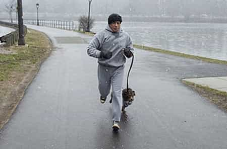
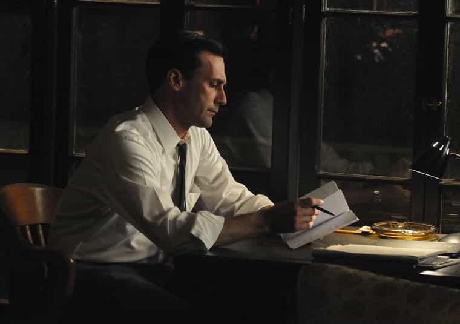

David is a strength coach and bestselling Men's Health author. You can follow him at HowToBeast.com.


We all go through rough patches. Maybe you were just fired. Maybe you recently experienced a touch breakup or divorce. Maybe a close family member unexpectedly died. Maybe you just broke a bone or were diagnosed with a certain medical condition.
When tragedy strikes, we tend to gravitate towards one of two directions. We can lose touch with reality and let ourselves fall into an ever-descending cycle of depression and self-pity. Or we can look at our circumstances as a fresh start and inject a renewed sense of focus and determination into our lives.
The latter is obviously preferable. It tends to ignite a period of rapid growth, where we leave the past behind and embrace a future that’s distinct from what we’d prepared for. However, getting to this point and avoiding the easier path of why me’s and fuck my life’s is not straightforward, especially when everything you see and do seems to be a reminder of your misery.
Oftentimes people cope with the chaos by pursuing obsessive behaviours. It could be working 80 hour weeks. It could be playing video games. It could be trying to hook up with as many girls as possible. It could be abusing alcohol or drugs. These are all natural responses. And they usually work– at least better than sitting around and crying. Unfortunately they tend to be quick fixes that lead right back to the pain once you’ve burnt yourself at whichever activity you threw yourself into.
I’ve cried to myself before. I’ve also pursued obsessive behaviours. A different approach is going back to the absolute basics. From my experience, this tends to be the route that gets me – and keeps me – out of the ditches most effectively. It guarantees a grounded emotional state, healthy thoughts, and a physically fit body. And when you create these conditions, a period of personal growth is almost unavoidable.

Below are the habits that I incorporate into my life in times of pain or loss. Whenever I find myself with extra time on my hands that could be used to whine or bitch, I take up one of these activities.
You must sleep at least 7 hours per night. No excuses. Without a solid sleep schedule you can crumble even during happy and energetic periods of your life. You must also eat basic foods that comfort your stomach and give you sustained energy. Cooking, even basic meals, is also therapeutic. You must ensure that these two cornerstones are well maintained in order to recover and prosper.
You must exercise your body in order to release the tension you’ve built up inside your body and your mind. I love lifting and playing basketball, so that’s what I do, but anything that’s enjoyable and physically challenging works.
Whenever you’re feeling anxious close your eyes and focus on deep breathing for 5 minutes. It will keep you grounded and prevent you from slipping into negative mental states.
I recently saw a quote that said that 30 minutes of reading has never failed to lift one’s spirits. It’s true. And you learn. Just grab an actual book—browsing the internet hardly counts as focused reading.
Writing is equally therapeutic. Write about your life and your daily realizations. When you put your thoughts on paper, you’re forced to develop them. I’ve learned a lot about myself from just sitting down and typing for 30 minutes.

Everyday, think of 10 ideas. It could be 10 mobile apps you could develop. It could be 10 articles you could write. It could be 10 vacations you could take. It could be 10 things you’re grateful for. It serves to exercise your mental muscles and explore the endless possibilities that are available to you.
No matter how shitty you feel, go out and approach women. Even if you just say hi to three girls, it will get you outside of your comfort zone, outside of your home, and outside of your head.
For more tips on confidence and success check out my new book Dominate. Click here for reviews and more info.
Read More: Don’t Let Women Rule Your Life